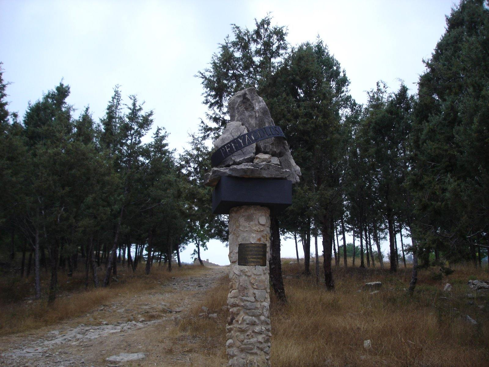
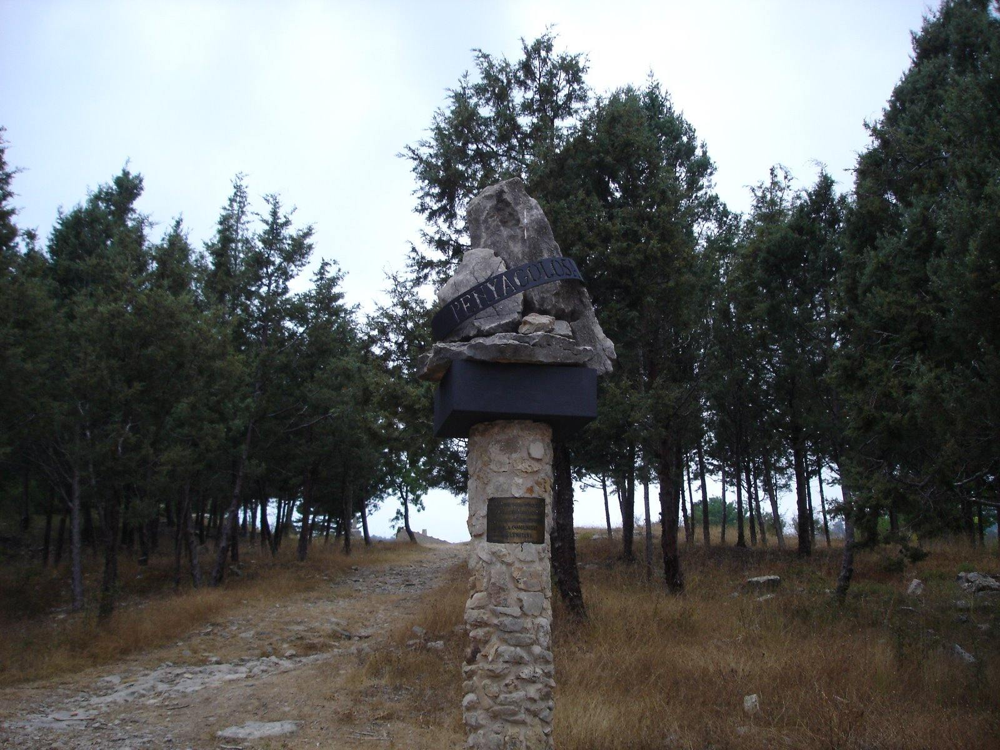
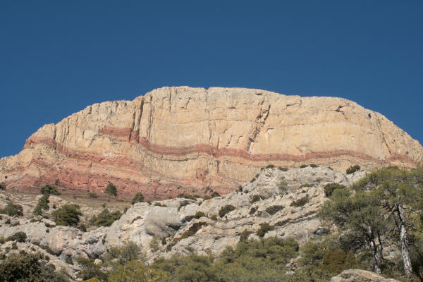
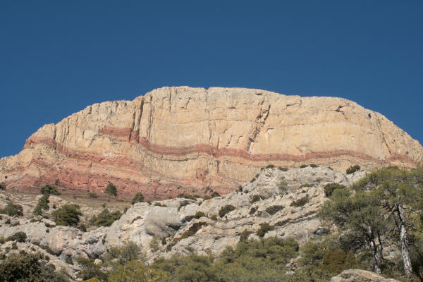

Parc natural de Penyagolosa
El Parc Natural del Penyagolosa és un espai natural protegit situat a l'interior de la província de Castelló, Comunitat Valenciana. Aquest parc s'estén pels termes municipals de Vistabella del Maestrat, Vilafermosa i Xodos, i abraça el massís del Peñagolosa, una de les muntanyes més icòniques del territori valencià.
 

 


Vistes del parc natural de Penyagolosa
Orografia
Amb una superfície de 1.094,45 hectàrees, és una de les fites geogràfiques més emblemàtiques de la Comunitat Valenciana, convertit en símbol de les terres muntanyoses i agrestes de l'interior, en contrast pronunciat amb les planes litorals i les valls fèrtils de la costa. El parc abraça un massís central homònim i que s'eleva a 1.814 metres d'altitud, és el segon cim més alt de la Comunitat Valenciana.
Tradició i cultura
El parc representa tant una referència geogràfica com un element cultural profundament arrelat en la tradició valenciana. Aquesta muntanya no només destaca pel seu impacte visual en el paisatge, sinó també pel seu significat històric i espiritual, sent un lloc venerat i present en nombroses llegendes i tradicions locals.
Com arribar-hi
Amb vehicle:
- Des de Villahermosa del Río
-
Per la CV175 fins a Puertomingalvo ja a la província de Terol. Abans d'arribar al poble davant del cementiri, surt una pista forestal (no apta per a turismes) fins a Sant Joan de Penyagolosa, ia dos quilòmetres de la població en direcció a Mosqueruela trobem una pista asfaltada que té accés a la província per un túnel, passant aquest a uns dotze quilòmetres trobem una cruïlla ia mà dreta ja ens indica l'ermitori.
- Des de Xodos
-
A la sortida del poble en direcció a Vistabella neix una pista forestal en bones condicions que arriba fins al Pla de la Creu. A partir d'aquí hi ha una bifurcació, per una banda porta a Sant Joan de Penyagolosa i de l'altra fins a la Banyadera a la base del bec.
- Des de Vistabella del Maestrat
-
Per la CV170, passat el poble ia dos quilòmetres d'aquest hi ha una cruïlla, on trobem l'indicador cap a Sant Joan de Penyagolosa.